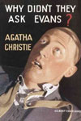
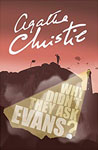
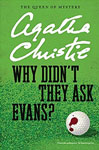
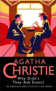
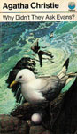
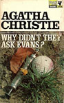
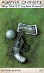
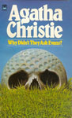

First published in the United Kingdom by the Collins Crime Club in September 1934 and in the United States by Dodd, Mead and Company in 1935 under the title of The Boomerang Clue.
Bobby Jones - whose name is the same as that of the American golfer who was at the height of his fame at the time of publication (although the narrative explains this Bobby is not the American master) - finds a man dying at his local golf course. A photo he saw in the man's pocket is replaced, as police seek his identity. Bobby and his friend Lady Frances Derwent have adventures as they solve the mystery of the man's last words, "Why didn't they ask Evans?"
The novel was praised at first publication as "a story that tickles and tantalises" and that the reader is sure to like the amateur detectives and forgive the absence of Poirot. It had a lively narrative, full of action, with two amateur detectives who "blend charm and irresponsibility with shrewdness and good luck". Robert Barnard, writing in 1990, compared it to Evelyn Waugh's Vile Bodies and felt that the detectives were too much the amateurs.








Screen Versions
Why Didn't They Ask Evans? was adapted by London Weekend Television and transmitted on 30 March 1980. Before this production, there had been relatively few adaptations of Christie's work on the small screen as it was a medium she disliked and she had not been impressed with previous efforts, in particular a transmission of And Then There Were None on 20 August 1949 when several noticeable errors went out live (including one of the "corpses" standing up and walking off set in full view of the cameras). By the 1960s she emphatically refused to grant television rights to her works. After Christie's death in 1976, her estate, principally managed by her daughter Rosalind Hicks, relaxed this ruling and Why Didn't They Ask Evans? was the first major production that resulted. It attracted large audiences and satisfactory reviews, but more importantly, it demonstrated to television executives that Christie's work could be successful for the small screen given the right budgets, stars and attention to detail.
The novel doesn't feature Miss Marple (although Joan Hickson plays a small role in this 1980 production) and the main character is Lady Frankie Derwent.
Given a generous budget of one million pounds, a large sum for the time, it had an all-star cast and a three-month shooting and videotaping schedule. Problems were encountered during the 1979 ITV strike which lasted three months and led to replacement production personnel when the strike ended, including a second director. The original intention was that the 180-minute teleplay would be transmitted as a three-part "mini-serial", but ITV then decided to show it as a three-hour special with maximum publicity, especially for Francesca Annis in the role of Frankie (Annis was a major name in UK television at the time, having played the title role in Lillie, the story of Lillie Langtry, two years before).
The production was faithful to the plot and dialogue of the book but two notable changes were made. The first is the recognition in the isolated cottage that Dr Nicholson is Roger Bassington-ffrench in disguise. In the novel, it is Bobby who recognises the deception as the man's ear-lobes are different from those of the doctor whom he had glimpsed previously. In the adaptation, Frankie witnesses one of Nicholson's patients attacking him in the sanatorium when his face is badly scratched. In the cottage, she realises the scratches have disappeared. The second change comes at the end when, instead of writing to Frankie from South America, Roger lures her to a deserted Merroway Court, makes much the same confession as appears in the book's letter and tells her he loves her, asking her to join him. When she refuses, he locks her in a room of the house (to be freed by Bobby the next day) but does not harm her as he makes his escape abroad.
Patrick Barlow loosely reworked Christie's novel for a 2009 two-hour television film starring Julia McKenzie as Miss Marple, who does not appear in the original novel. The Castle Savage scenes were largely filmed at Loseley Park near Guildford - a 16th-century stately home in Surrey belonging to the More-Molyneux family - while Dr.Nicholson's house was Shrub's Wood, a Grade II* listed 'Moderne' country house in Chalfont St Giles, Bucks which was used in two Poirot episodes - The Double Clue and One, Two, Buckle My Shoe.